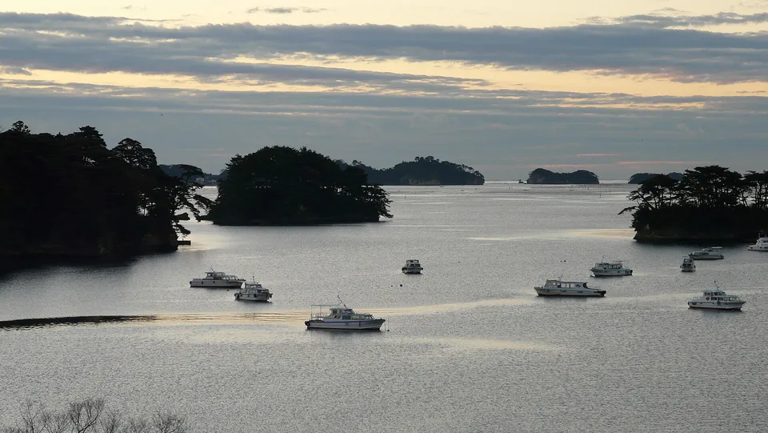
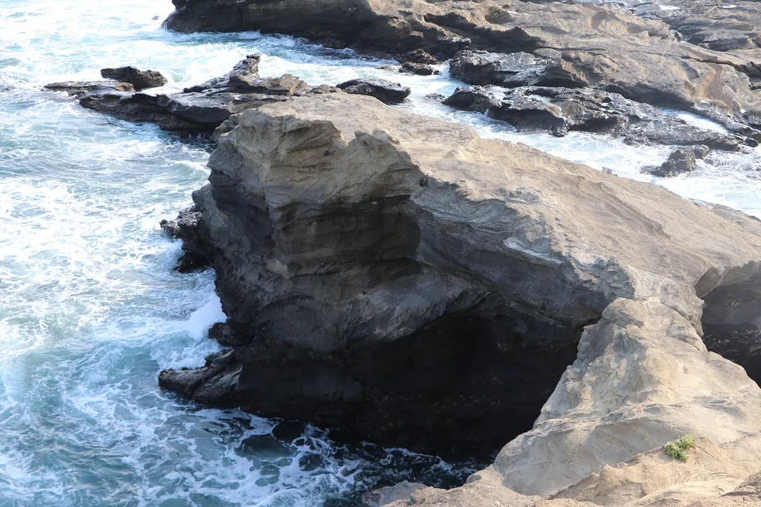
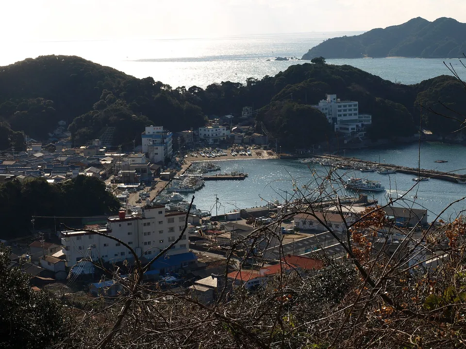
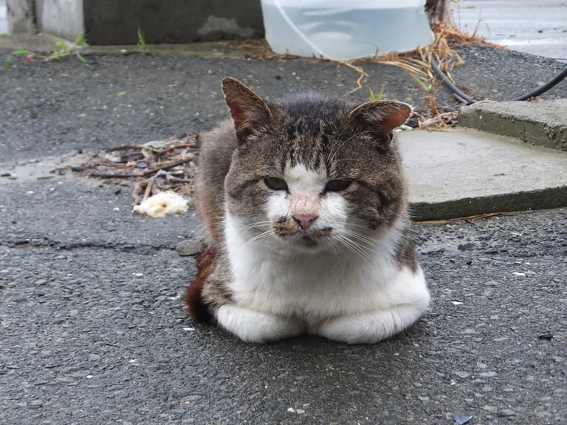
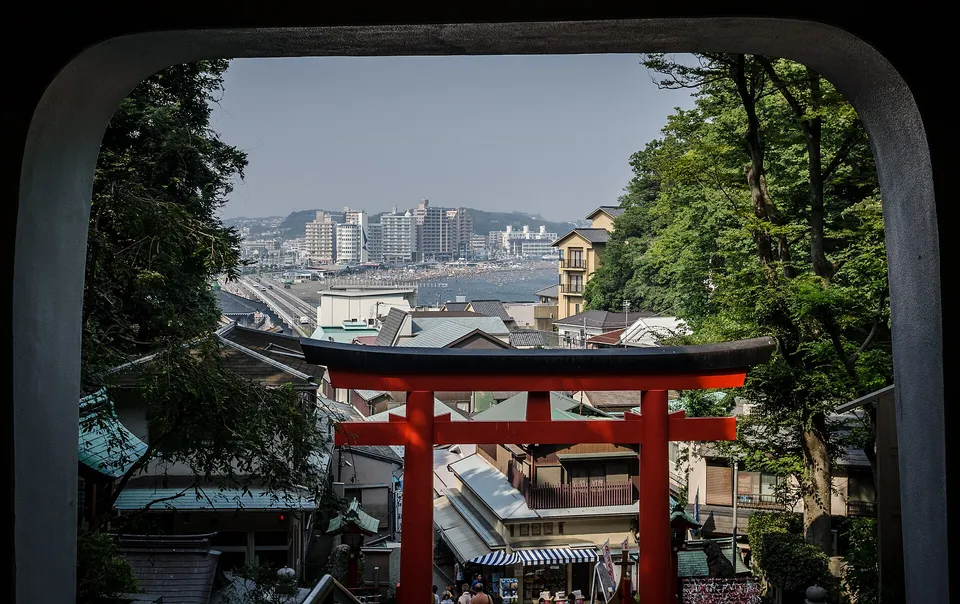
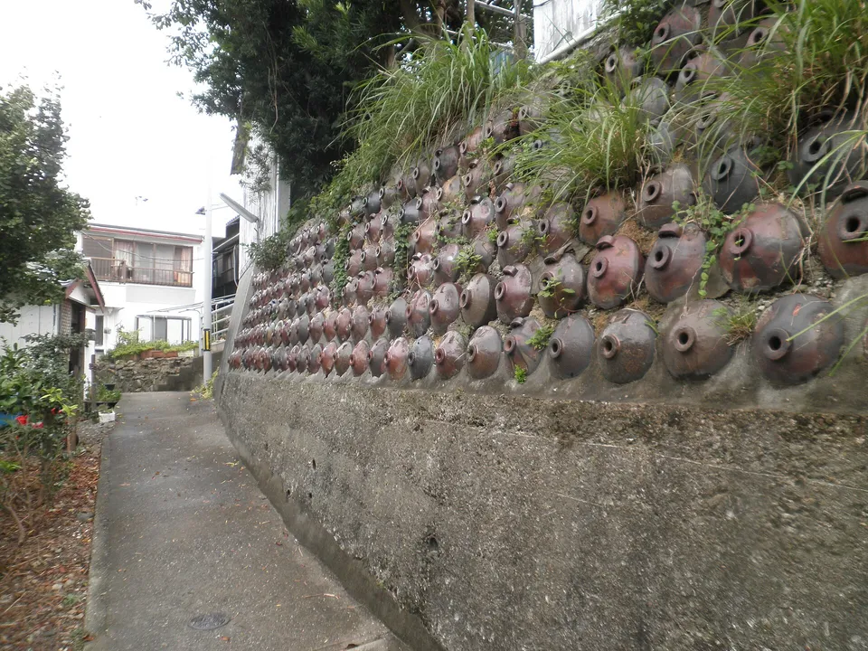
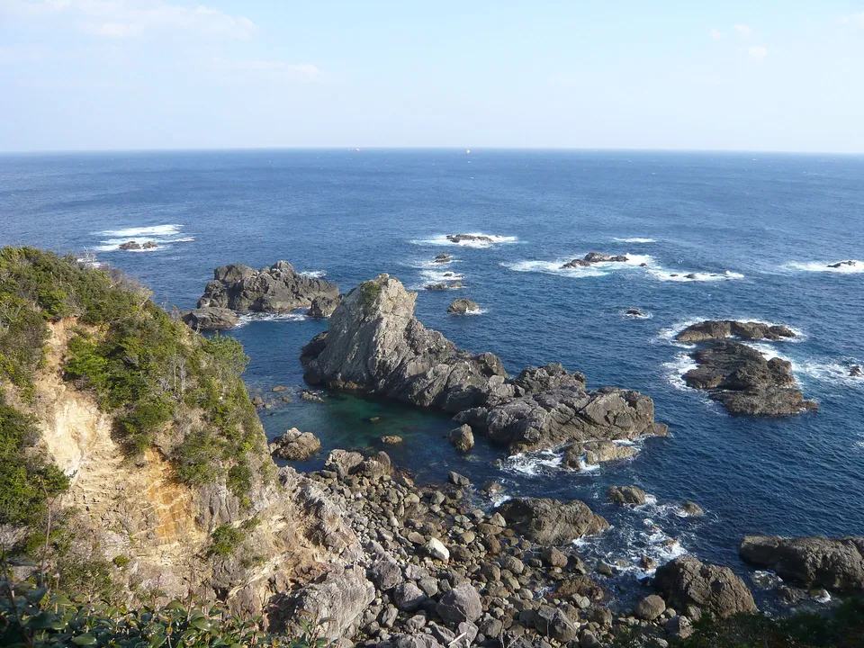
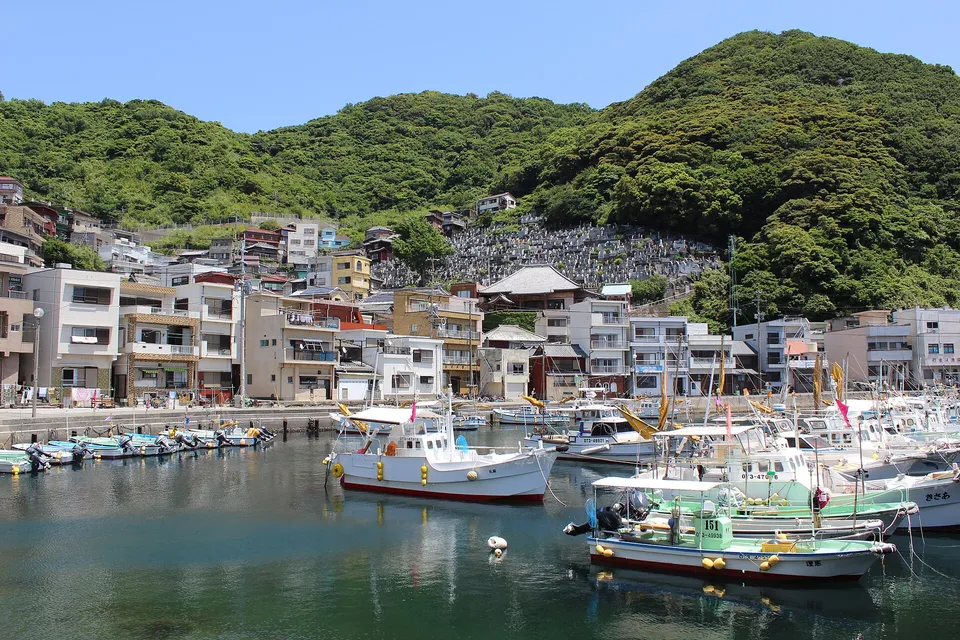

{kind=link}
The Pacific side of Japan has 49 inhabited islands between Sanriku and Miyazaki, and almost all of them hide in bays: the four villages inside Matsushima Bay, the cat island off Ishinomaki, Enoshima and Jōgashima an hour from Tokyo, the octopus and fugu islands of Mikawa Bay, the Toba islands, Kii Ōshima at the bottom of Honshu, Kashiwajima at the end of Shikoku, and the tuna village of Hotojima across the channel.
The last slice of our national island table — same numbers, grouped by bay, with the boats and bridges.



Photos: Matsushima Bay, Miyagi — the inhabited islands are the ones behind the famous ones — Chensiyuan via Wikimedia Commons, CC BY-SA 4.0 · Umanose-dōmon, the rock arch on Jōgashima at the tip of the Miura Peninsula — Osumi Akari via Wikimedia Commons, CC BY-SA 4.0 · Tōshijima, the largest of the Toba islands — merec0 from Kyoto, Japan via Wikimedia Commons, CC BY 2.0
{kind=link}
{kind=link}
{kind=link}
The open-ocean side
Japan's Pacific coast has surprisingly few islands. From Sanriku to Miyazaki it is a long, exposed shore with deep water offshore, and the islands that exist sit in the bays — Matsushima, Sagami, Mikawa and Ise, Ago, the Uwa Sea, the Bungo Channel — not out in the ocean. 49 of them have people, and most of those are a few hundred each. Only four pass a thousand.
This is the last slice of our table of every inhabited island in Japan: what is left after the Seto Inland Sea, Nagasaki, the Sea of Japan, Izu and Ogasawara and the Nansei Islands are taken out. Same source, same columns. Lake Biwa's Okishima and the Amakusa and Yatsushiro-sea islands of Kumamoto and Kagoshima are inland-sea or East China Sea and stay in the national table.
The shape of it
Source: SHIMADAS (Japan Islands Center, 2019 edition), 2015 census and GSI figures.
The islands, north to south
There is no one trip here; these are islands you add to a trip you are already making. North to south:

Tashirojima and the Sanriku islands
Off Ishinomaki, the cat island: 62 people and several times that many cats, an hour's ferry from the city. Next to it Kinkasan, a sacred mountain-island with 15 residents, deer and a shrine; Ajishima (247 people) is on the same boat. Further north Ōshima at Kesennuma (2,522 people, now bridged) and Izushima and Enoshima off Onagawa. All of them were hit by the 2011 tsunami; all are back.
.JPG){kind=link}
Matsushima Bay
The famous bay is 260 islets, and four of them have villages: Katsurashima (160 people), Nonoshima, Sabusawajima — the old Edo-period port, 96 people — and Hōjima with 12. The town boat from Shiogama calls at all four in under an hour, and almost none of the sightseeing-cruise passengers get off. Miyatojima to the east (536) is bridged and has the Ōtakamori lookout.

Enoshima and Jōgashima
Tokyo's islands-for-an-afternoon. Enoshima (368 people) is a shrine hill at the end of a footbridge from Fujisawa, an hour from Shinjuku; Jōgashima (484) is the rock at the tip of the Miura Peninsula, bridged, with the Umanose arch and tuna lunches in Misaki. Hatsushima, 333 people, is the ferry island off Atami.
{kind=link}

Mikawa Bay and Toba
Himakajima (1,896 people on less than a square kilometre), Shinojima and Sakushima are the Aichi islands, twenty minutes from the Chita peninsula — octopus and fugu on the first two, art on the third. Across the strait the Toba islands: Tōshijima (1,975, the biggest), Sugashima, Sakatejima and Kamishima, which is Mishima's The Sound of Waves and the island where the Ise and Mikawa bays meet.
{kind=link}

Shima and Kii
Kashikojima is the bridged island in Ago Bay with the hotel the 2016 G7 used; Masakijima and Watakanojima are its small neighbours. Kii Ōshima (1,123 people), off Kushimoto at the southern tip of Honshu, is bridged, and is where the Ottoman frigate Ertuğrul was wrecked in 1890 — the reason every Turkish visitor to Japan knows the name. Nakanoshima at Katsuura is a hotel island with a hot spring.
{kind=link}

Shikoku and the Bungo Channel
Kashiwajima (385 people) at the south-western end of Shikoku has the clearest water on Honshu–Shikoku and is bridged; Okinoshima and Ugurushima beyond it are the boat-only ones. Across the channel Ōita's Hotojima (700 people) is a tuna-fishing village stacked three storeys up a hillside, and Ōnyūjima is ten minutes from Saiki. Ehime's Uwa Sea side has Hiburishima, Tojima, Kashima and Kushima. Tokushima's Ishima and Takegashima face the open Pacific; Miyazaki's Shimanoura (837) and Aoshima (7 people and a shrine) close the list.
{kind=link}
The table: all 49
Every inhabited island on the Pacific side of Honshu, Shikoku and eastern Kyushu that is not in one of the other regional tables, north to south. Sort by people or size, or type a name.
| Island | Prefecture · group | People ▾ | km² ▾ | Read more |
|---|---|---|---|---|
| Ōshima大島 | MiyagiSanriku & Matsushima Bay | 2,522 | 8.50 | |
| Miyatojima宮戸島 | MiyagiSanriku & Matsushima Bay | 536 | 7.39 | |
| Ajishima網地島 | MiyagiSanriku & Matsushima Bay | 247 | 6.49 | Wikipedia |
| Katsurashima桂島 | MiyagiSanriku & Matsushima Bay | 160 | 0.67 | |
| Sabusawajima寒風沢島 | MiyagiSanriku & Matsushima Bay | 96 | 1.21 | |
| Izushima出島 | MiyagiSanriku & Matsushima Bay | 77 | 2.63 | |
| Nonoshima野々島 | MiyagiSanriku & Matsushima Bay | 66 | 0.44 | |
| Tashirojima田代島 | MiyagiSanriku & Matsushima Bay | 62 | 2.92 | Wikipedia |
| Enoshima江島 | MiyagiSanriku & Matsushima Bay | 38 | 0.36 | |
| Kinkasan金華山 | MiyagiSanriku & Matsushima Bay | 15 | 10 | Wikipedia |
| Hōjima朴島 | MiyagiSanriku & Matsushima Bay | 12 | 0.34 | |
| Jōgashima城ケ島 | KanagawaSagami & Suruga Bay | 484 | 0.99 | Wikipedia |
| Enoshima江の島 | KanagawaSagami & Suruga Bay | 368 | 0.38 | Wikipedia |
| Hatsushima初島 | ShizuokaSagami & Suruga Bay | 333 | 0.44 | Wikipedia |
| Tōshijima答志島 | MieMikawa & Ise Bay | 1,975 | 6.96 | Wikipedia |
| Himakajima日間賀島 | AichiMikawa & Ise Bay | 1,896 | 0.77 | Wikipedia |
| Shinojima篠島 | AichiMikawa & Ise Bay | 1,653 | 0.94 | Wikipedia |
| Sugashima菅島 | MieMikawa & Ise Bay | 550 | 4.41 | Wikipedia |
| Kami-shima神島 | MieMikawa & Ise Bay | 348 | 0.76 | Wikipedia |
| Sakatejima坂手島 | MieMikawa & Ise Bay | 315 | 0.51 | Wikipedia |
| Sakushima佐久島 | AichiMikawa & Ise Bay | 234 | 1.73 | |
| Kii Ōshima紀伊大島 | WakayamaShima & Kii | 1,123 | 9.47 | Wikipedia |
| Watakanojima渡鹿野島 | MieShima & Kii | 219 | 0.69 | |
| Kashiko Island賢島 | MieShima & Kii | 107 | 0.68 | Wikipedia |
| Masakijima間崎島 | MieShima & Kii | 69 | 0.36 | |
| Nakanoshima中ノ島 | WakayamaShima & Kii | 20 | 0.07 | |
| Ōshima大島 | KochiTokushima & Kōchi | 488 | 1.01 | |
| Kashiwajima柏島 | KochiTokushima & Kōchi | 385 | 0.57 | |
| Takegashima竹ケ島 | TokushimaTokushima & Kōchi | 214 | 1.30 | |
| Ishima伊島 | TokushimaTokushima & Kōchi | 165 | 1.44 | |
| Okinoshima沖の島 | KochiTokushima & Kōchi | 149 | 10 | |
| Nakanoshima中ノ島 | KochiTokushima & Kōchi | 67 | 0.23 | |
| Ugurushima鵜来島 | KochiTokushima & Kōchi | 23 | 1.31 | |
| Kushima九島 | EhimeBungo Channel | 861 | 3.37 | |
| Ōnyūjima大入島 | OitaBungo Channel | 712 | 5.65 | |
| Hotojima保戸島 | OitaBungo Channel | 700 | 0.86 | |
| Tojima戸島 | EhimeBungo Channel | 307 | 2.75 | |
| Hiburishima日振島 | EhimeBungo Channel | 289 | 3.74 | |
| Nii Ōshima大島 | EhimeBungo Channel | 244 | 0.75 | |
| Ōshima大島 | OitaBungo Channel | 114 | 1.63 | |
| Kashima嘉島 | EhimeBungo Channel | 80 | 0.30 | Wikipedia |
| Tsukumishima津久見島 | OitaBungo Channel | 35 | 0.29 | |
| Fukashima深島 | OitaBungo Channel | 19 | 1.10 | |
| Yakatajima屋形島 | OitaBungo Channel | 18 | 1.06 | |
| Kuroshima黒島 | OitaBungo Channel | 4 | 0.20 | |
| Shimauratō島野浦島 | MiyazakiHyūga | 837 | 2.84 | |
| Tsukishima築島 | MiyazakiHyūga | 9 | 0.24 | |
| Aoshima青島 | MiyazakiHyūga | 7 | 0.04 | Wikipedia |
| Ōshima大島 | MiyazakiHyūga | 1 | 2.09 | Wikipedia |
49 islands. Population and area are the figures printed in SHIMADAS (2019 edition; 2015 census and GSI), with two areas (Kashikojima, Ōshima in Sukumo) and two names (Himakajima, Masakijima) corrected against the Japanese Wikipedia articles where the extraction misread them. Ajishima, which the extraction missed, is added from the Japanese Wikipedia article (247 people, 2020 census). Tebajima off Mugi (Tokushima) and one small island off Uwajima are inhabited but missing or unverifiable in our extraction and are left out. Enoshima, Jōgashima, Kashikojima, Kashiwajima, the Sukumo Ōshima and Aoshima are joined to the mainland by bridge.
The Japanese you'll actually use
Common questions
Which Japanese islands are near Tokyo?
On the mainland coast: Enoshima (Fujisawa), Jōgashima (Miura) and Hatsushima (off Atami) — all under two hours from Shinjuku. Tokyo's own islands, the Izu and Ogasawara chains, are south of Sagami Bay and have their own table.
How do I get to Tashirojima, the cat island?
Ferry from Ishinomaki (Ajishima Line), about 45 minutes to an hour; two or three sailings a day, more in summer. There are no shops to speak of, so bring what you need.
Can I visit the islands in Matsushima Bay?
Yes — the Shiogama city boat (Urato islands line) calls at Katsurashima, Nonoshima, Sabusawajima and Hōjima, about 25 minutes to the first and under an hour to the last. The sightseeing cruises from Matsushima pier do not stop.
Which islands on this list are bridged?
Enoshima, Jōgashima, Kashikojima, Kii Ōshima, Nakanoshima (Katsuura, by hotel boat), Kashiwajima, Ōshima in Sukumo, Ōshima in Kesennuma, Miyatojima and Aoshima.
Are the population figures current?
They are the 2015 census as printed in the 2019 edition of SHIMADAS; most islands have fewer people now.
Read next
Sources: SHIMADAS (Japan Islands Center, 2019 edition) for the roster and figures (2015 census, GSI); only published figures are reproduced, no text. Grouping by bay is ours; ferry times are rounded from the operators' timetables and change by season. English article links verified by prefecture; a blank means unverified. Photos are Creative Commons — credits under each image.